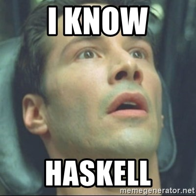

ㄴ 이날이 오기까지 ㅎ
이 블로그는?..
Elixir를 이용한 SSG를 사용해본건데
Serum을 선택한 이유..는 딱히 없고
그냥 "Elixir가 뭐지? @_@" 해서 선택해보았다 ㅎ..
근데 예상보다 훨씬 깔끔하고 보기 좋은게 괜찮은 선택이었을지도 ?
개인적으로 뭐든지 할 때 정리하면서 하면 뭔가 본격적으로 하는 성격이라(Partial perfectionism이라 칭합시다)..
아마 공부할 때 같이 블로그 글 쓰는게 도움이 될 꺼라고 믿으면서(아마) 만들었다.